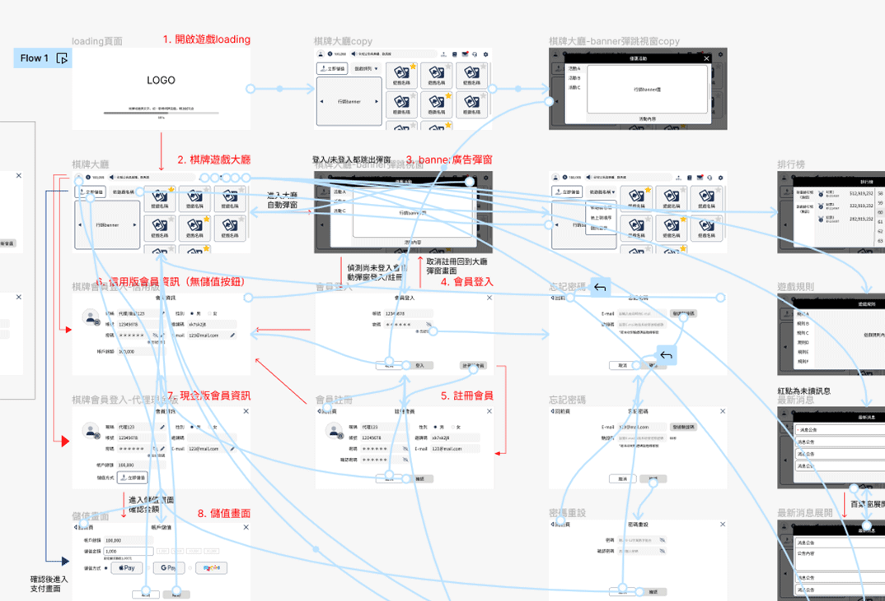
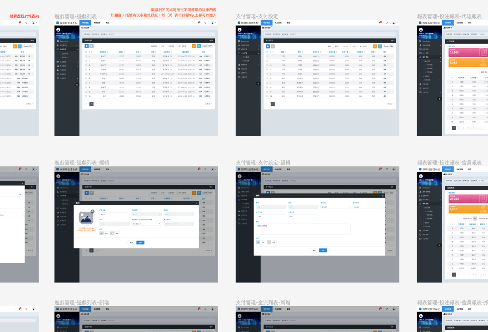

了解客戶對產品的需求和期望後，著手進行市場研究，以了解目標市場的趨勢，有助於我在產品設計中融入最新的產品設計元素，並找到產品的競爭優勢。
基於客戶需求和市場研究，我會開始進行產品規劃。這包括制定產品的功能和特色，以及設計初步的wireframe和mockup，包含每個步驟與各頁功能。
在產品規劃初步完成後，我會與客戶進行確認，以確保設計符合他們的期望，並會向客戶展示wireframe和mockup，根據客戶的反饋，我會進行產品設計的修改，完善UI/UX設計等等，以確保設計更符合客戶的需求。
確認最終的產品設計後，因我有設計與切版等相關技能，更能方便與團隊進行密切的協作。經由我提供的wireframe和flow，讓工程師們清楚了解產品的功能和操作流程，從而更順利地實現設計。
通過客戶的驗收，產品正式上線後，經由客戶反饋進行產品的持續改進。這有助於確保產品在市場上保持競爭力和持續吸引用戶。